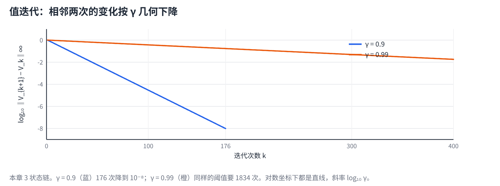
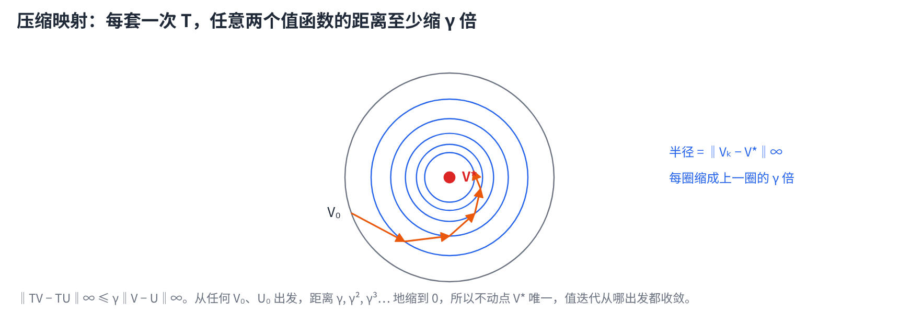
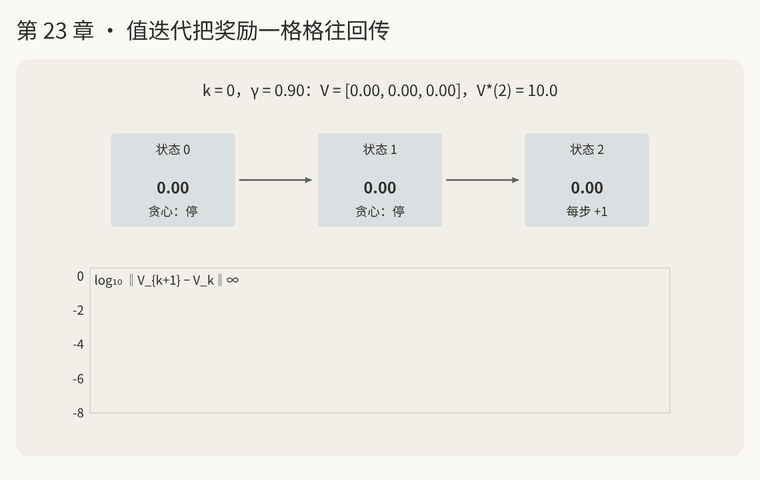

第 23 章 · MDP 与 Bellman 的完整推导：值函数、最优方程、压缩映射与值迭代
本地运行
git clone https://github.com/wikieden/math-and-eval-stats
cd math-and-eval-stats/code/notebooks
pip install jupyterlab torch numpy
jupyter lab ch23_mdp_bellman.ipynb也可以下载后直接用 VS Code 打开 .ipynb 运行。需要 GPU 的章节在 Colab 里选「代码执行程序 → 更改运行时类型 → GPU」。
本章回答：强化学习里的"值函数"到底满足什么方程？为什么值迭代一定收敛，要迭代多少次？γ 从 0.9 调到 0.99 为什么训练变慢？策略迭代为什么几步就停？
讲解日期：2026-11-25 · 上一章：第 22 章 数值计算 · 下一章：第 24 章 策略梯度推导
对应原文：Sutton & Bartocs285-deep-rl/materials/text/books/sutton-barto-RLbook2020.txt式 (3.14) Bellman 期望方程 L4324–L4372、§4.4 值迭代（目录 L142）；Hunter & Nachtergaelematerials/text/books/hunter-nachtergaele-applied-analysis/ch3.txt第 3 章压缩映射定理
本章缩写：MDP = Markov Decision Process（马尔可夫 / 决策 / 过程）；V^π = 策略 π 的状态值函数；V* = 最优值函数；γ = 折扣因子；T、T^π = Bellman 最优算子、Bellman 期望算子；‖·‖∞ = 无穷范数（各分量绝对值的最大值）；VI = Value Iteration（值迭代）；PI = Policy Iteration（策略迭代）。全部缩写见 附录 · 缩写与术语表
讲解
第一步：值函数与 Bellman 期望方程（2026-11-25）
类比：一张存折的价值 = 这个月的利息 + 打个折的下个月存折的价值。
（Sutton & Barto 式 3.14，L4324–L4372）写成向量形式 \(V^\pi = r_\pi + \gamma P_\pi V^\pi\)，是一个线性方程组，直接解：
例子（编的 3 状态链，γ = 0.9）：状态 0 → 1 → 2；在 0、1 上"走"往前一格、扣 1 分，"停"原地 0 分；到了 2 每步 +1、永远留在 2。
| 策略 | V(0) | V(1) | V(2) |
|---|---|---|---|
| 一直停 | 0 | 0 | 10 |
| 一直走 | 6.2 | 8.0 | 10 |
V(2) = 1/(1 − 0.9) = 10；V(1) = −1 + 0.9 × 10 = 8；V(0) = −1 + 0.9 × 8 = 6.2。
一句话：Bellman 期望方程 V^π = r_π + γP_πV^π 是线性方程组，解是 (I − γP_π)⁻¹r_π。
第二步：Bellman 最优方程与值迭代（2026-11-25）
类比：每一步都挑"眼前奖励 + 打折后的未来"最大的那个动作。
有了 max，方程不再是线性的。值迭代：从任意 V₀ 出发，反复套 \(V_{k+1} = TV_k\)。
例子：
| 迭代 k | 1 | 2 | 3 | 4 | 5 |
|---|---|---|---|---|---|
| ‖V_{k+1} − V_k‖∞ | 1.0 | 0.9 | 0.81 | 0.729 | 0.6561 |
每次正好乘 0.9 = γ；176 次后变化 < 10⁻⁸，V* = [6.2, 8.0, 10.0]，最优策略在 0、1 上"走"（在 2 上两个动作一样，代码取第一个）。

图 23-1 · 纵轴 ‖V_{k+1} − V_k‖∞（对数刻度），一条斜率为 log γ 的直线一句话：Bellman 最优方程 V* = TV*；值迭代反复套 T，误差每次乘 γ。
第三步：为什么一定收敛：T 是压缩映射（2026-11-25）
类比：把一张地图缩小 90% 印在原图上，总有且只有一个点和它在原图上的位置重合。
（max 的两边差不会超过里面差的最大值，再乘 γ）。由压缩映射定理（Banach 不动点定理，Hunter & Nachtergaele 第 3 章）：
- T 有且只有一个不动点 V*；
- 从任何 V₀ 出发，\(V_k \to V^*\)，误差 \(\|V_k - V^*\|_\infty \le \gamma^k\|V_0 - V^*\|_\infty\)。
例子：随机取 1000 对 V、U，\(\|TV - TU\|_\infty / \|V - U\|_\infty\) 最大 0.9000，没有一对超过 γ。

图 23-2 · 每套一次 T，到 V 的距离至少乘 γ；圈越缩越小，最后落在唯一的不动点上*一句话：Bellman 算子在无穷范数下是 γ-压缩，所以不动点唯一、值迭代从哪出发都收敛。
第四步：要迭代多少次：γ 越接近 1 越慢（2026-11-25）
误差每次至少乘 γ，从 ε₀ 降到 ε 至少要
例子（初始误差 10 降到 10⁻⁶）：
| γ | 至少迭代 | 有效时域 1/(1 − γ) |
|---|---|---|
| 0.9 | 153 | 10 步 |
| 0.99 | 1604 | 100 步 |
γ = 0.99 要多 10 倍迭代：它让值函数"看得更远"，但每次只能往回传 1 步，传 100 步要很多轮。RL 训练里 γ 调大、学得变慢，也是这个原因（TD 学习每次也只往回传一步）。
一句话：迭代次数 ≈ log(误差比)/(1 − γ)；有效时域 1/(1 − γ) 越长，收敛越慢。
第五步：策略迭代：评估 + 贪心改进，几步就停（2026-11-25）
类比：先算清楚"按现在的做法能拿多少"，再在每个状态换成"按这个算账最划算的动作"，重复。
- 策略评估：解 \(V^\pi = (I - \gamma P_\pi)^{-1}r_\pi\)（第一步，精确解）；
- 策略改进：\(\pi'(s) = \arg\max_a[R(s, a) + \gamma\sum P V^\pi]\)；
- 策略不变就停。
例子：从"一直停"开始，3 轮就停在"走、走、—"，V = [6.2, 8.0, 10.0]。
策略的个数有限，每轮严格变好（或者已经最优），所以一定在有限步内停下；每轮代价是解一个线性方程组（贵），值迭代每轮便宜但要很多轮。
场景代码：值迭代的向量化写法（就是本章代码的写法）：
Q = R + gamma * P @ V # P 形状 (动作, 状态, 状态)，一次算出所有 (a, s) 的 Q 值
V = Q.max(axis=0) # Bellman 最优算子：对动作取 max
pi = Q.argmax(axis=0) # 贪心策略
一句话：策略迭代 = 精确评估 + 贪心改进，有限步停；值迭代每步便宜但要 log(ε)/(1 − γ) 步。
动画演示：值迭代把奖励一格格往回传

可交互版：animations/23-mdp-bellman.html（滑块调迭代次数 k 和 γ）。
怎么看：
- 三个格子是三个状态，格子里的数是当前的 V_k，颜色越深值越大（第二步）；
- 一帧一次迭代：V(2) 先涨，然后 V(1)、V(0) 跟着涨，奖励的信息一格一格往回传；
- 下方曲线是 ‖V_{k+1} − V_k‖∞，按 γ 几何下降；把 γ 调到 0.99，曲线平很多（第四步）。
练习与作答记录
题 1（第一步）：两个状态，固定策略下转移矩阵 [[0, 1], [1, 0]]（来回跳），奖励 [1, 0]，γ = 0.5。解 V^π。
作答：（待作答）
题 2（第三、四步）：γ = 0.8，值迭代的初始误差是 5，要降到 0.01 至少迭代几次？
作答：（待作答）
题 3（第二、五步）：本章的链里，如果"走"的代价从 −1 改成 −20，最优策略会变成什么？（不用算到小数，说出理由）
作答：（待作答）
口诀
存折的价值等于本月利息加打折的下月，期望方程解一个线性方程组；
最优方程带 max，值迭代反复套；
算子是 γ 压缩，不动点唯一，从哪出发都收敛；
迭代次数约 log 除 1 减 γ；策略迭代评估加贪心，几轮就停。
本章复习卡片
ST83（Bellman 期望方程与矩阵解）、ST84（Bellman 最优算子是 γ-压缩、值迭代为什么收敛）、ST85（迭代次数与 γ 的关系；策略迭代）。练习做完后，按答错、卡住的地方补上。
附录 · 延伸阅读
留给以后深入学习用，不影响本章主线。★ 是建议先读的。
推荐阅读
| 读什么 | 读哪里 | 读它为了什么 |
|---|---|---|
| ★ Sutton & Barto | §3.5–3.6（式 3.14 L4324 起）；§4.1–4.4 | 值函数、Bellman 方程、策略评估 / 改进 / 迭代、值迭代 |
| ★ Hunter & Nachtergaele | 第 3 章 | 压缩映射定理的证明 |
| 《从零学强化学习》 | Bellman、值迭代章节 | RL 视角的完整讲法 |
| 第 30 章 泛函分析入门 | Banach 空间 | 压缩映射定理的一般形式 |
数学原理
- max 的非扩张性：\(|\max_a f(a) - \max_a g(a)| \le \max_a|f(a) - g(a)|\)，所以 \(|TV(s) - TU(s)| \le \gamma\max_{s'}|V(s') - U(s')|\)。
- 压缩映射定理：完备度量空间上的压缩映射有唯一不动点，迭代以几何速率收敛（误差 ≤ γᵏ × 初始误差）。
- (I − γP)⁻¹ 存在：P 是随机矩阵（每行和为 1），谱半径 1，γ < 1 时 I − γP 的特征值都非零；\((I - \gamma P)^{-1} = \sum_k\gamma^kP^k\)（诺依曼级数，就是"把未来每一步的折扣转移加起来"）。
- 策略改进定理：π' 对 V^π 贪心 ⇒ V^{π'} ≥ V^π（每个状态都不变差）。
公式清单
| 公式 | 意思 |
|---|---|
| \(V^\pi = r_\pi + \gamma P_\pi V^\pi = (I - \gamma P_\pi)^{-1}r_\pi\) | Bellman 期望方程 |
| \(V^* = \max_a[R + \gamma PV^*]\) | Bellman 最优方程 |
| \(\|TV - TU\|_\infty \le \gamma\|V - U\|_\infty\) | 压缩性 |
| \(k \ge \log(\epsilon/\epsilon_0)/\log\gamma\) | 值迭代次数下界 |
代码对照：把本章的数字用代码算一遍
代码在仓库本地
math-and-eval-stats/solutions/chapter-code/ch23_mdp_bellman.py，配套测试tests/test_ch23.py：
bash cd math-and-eval-stats/solutions/chapter-code uv run python ch23_mdp_bellman.py uv run pytest tests/test_ch23.py
讲义 ↔ 代码：
| 讲义 | 公式 | 写法 | 跑出来 |
|---|---|---|---|
| 第一步 期望方程 | (I − γP)⁻¹r | policy_value(pi) |
一直走：[6.2, 8.0, 10.0] |
| 第二步 值迭代 | V ← TV | value_iteration() |
176 次；变化 1, 0.9, 0.81, … |
| 第三步 压缩 | 比值 ≤ γ | contraction_check() |
最大 0.9000 |
| 第四步 次数 | log 公式 | iterations_needed(1e-6, 0.99, 10) |
1604 |
| 第五步 策略迭代 | 评估 + 贪心 | policy_iteration() |
3 轮 |
关键几行：
p = np.array([P[pi[s], s] for s in range(3)]) # 按策略挑出每个状态的转移行
V = np.linalg.solve(np.eye(3) - gamma * p, r) # 策略评估
V_new = np.max(R + gamma * P @ V, axis=0) # Bellman 最优算子
代码里才看得到的 3 件事：
- P 的形状是 (动作, 状态, 下一状态)：
P @ V对最后一维求和，得到 (动作, 状态) 的期望下一步值，再加 R 就是 Q 表。 - 在状态 2 两个动作打平：
argmax返回第一个（停），所以最优策略打印成 [1, 1, 0]；打平时任何一个都是最优。 - 值迭代的停止条件用相邻两次的差：真正的误差 ‖V_k − V‖ 不知道（不知道 V），但 ‖V_{k+1} − V_k‖ ≤ ε 时，‖V_{k+1} − V*‖ ≤ γε/(1 − γ)。
自己改一改（不影响练习答案）：
- 把 γ 改成 0.5，V* 变成多少？最优策略还是"走"吗？
- 给链加一个状态 3（0 → 1 → 2 → 3，3 才有 +1），值迭代要多少次？奖励往回传要几轮才到状态 0？